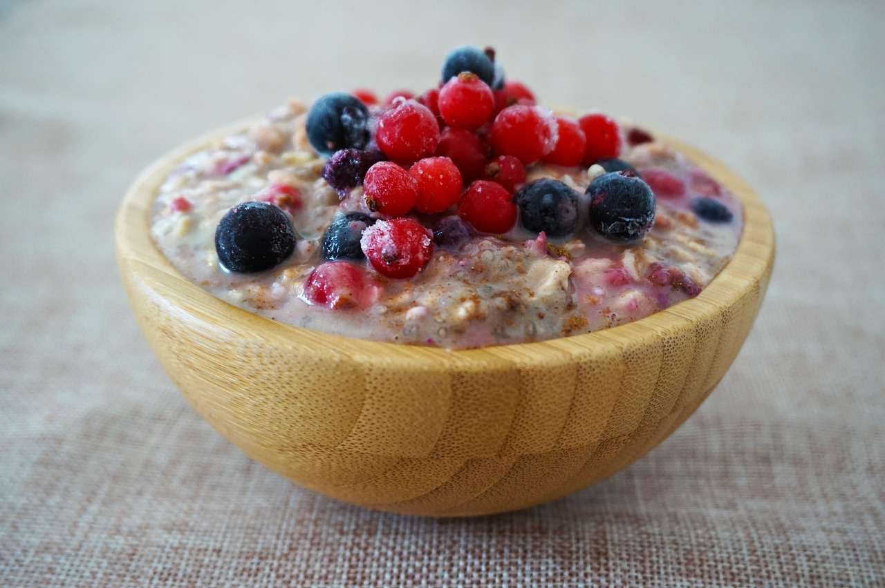

Overnight Oats Breakfast
Home
Source: LifeSum App - Curry paste

Quick, low sugar, high protein over night oats recipe
35g oats
1 tbsp chia seeds
1 tbsp shredded coconut
18g protein powder
120ml oat milk
40g frozen berries
Mix together the oats, chia seeds, coconut, and protein powder in a bowl or container.
Add the oat milk and stir thoroughly with a fork until no lumps or dry spots remain.
Fold in the frozen berries.
Store covered in the fridge—ready to eat chilled, or let it sit for at least 15–30 minutes for best texture.